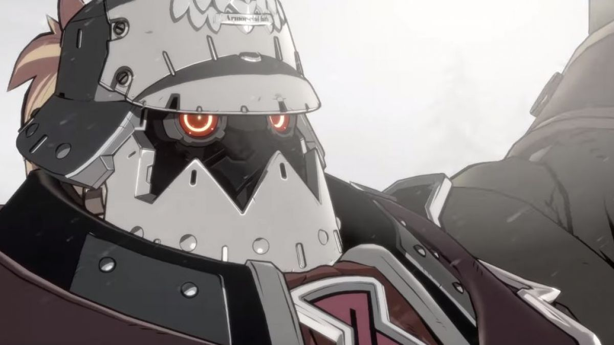

Alumnos Santiago Airaudo y Valentín Fischer
Para empezar, nosotros somos dos amigos egresados de la escuela técnica 460 "Guillermo Lehmann" en Rafaela, Santa Fe, y decidimos meternos junto a otros amigos más al mundo del desarrollo de videojuegos, una pasión comun en la que aspiramos trabajar
En este Portfolio vamos a hacer un breve resumen sobre nosotros:
